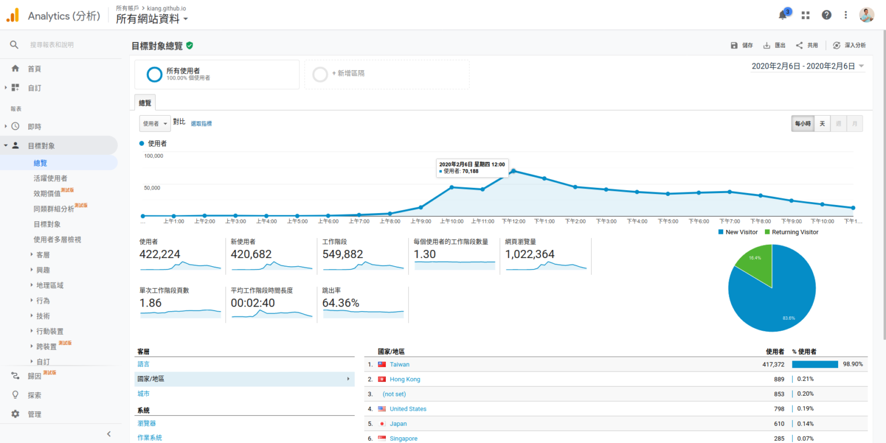

從口罩地圖到
公民參與 & 開源創新
kiang @ 第九屆數位傳播國際學術研討會 2020-11-20
kiang === 江明宗
2004 開始全職寫程式
2009 成立工作室接案
2014 參選台南市議員
2016-2018 台南市政府 => 經濟部 => 時代力量
2018 再次進入台南市政府
2020 回到靠接案過活
藥局口罩
採購地圖
地圖呈現
即時庫存資訊
自動定位到手機提供座標位置
搜尋與行政區檢索
結合多項開放資料
開放原始碼
故事是這樣開始的...
唐鳳政委
在聊天室提供資訊
g0v 開始協作
政府網站連結
政府動員宣傳
大量民眾湧入
排隊
成功承載
唐鳳政委
直接幫忙改程式碼
韓國版
口罩地圖
挑戰：號碼牌
庫存數字落差
表單蒐集資料
健保署
請藥局填寫備註
健保署
系統提供開關
看不到的辛酸(?)
資料來源加入
新的安全防護
健康服務中心
欄位、檔案名稱變更
免費主機？
這都是義務幫忙
接著聊聊怎麼賺錢
確診 22136954
死亡 780908
數字持續攀升
但台灣很無感
Why?
全民健康保險
SARS => Covid-19
你的手機
What?
電信資料
接觸追蹤
電子圍籬
人潮示警
全民公敵？
更好的選擇
我，公民參與，故事
2012 當了爸爸
2014.03.18
我曾經以為自己活在民主國家
後來發現
我曾經以為可以參選
後來發現